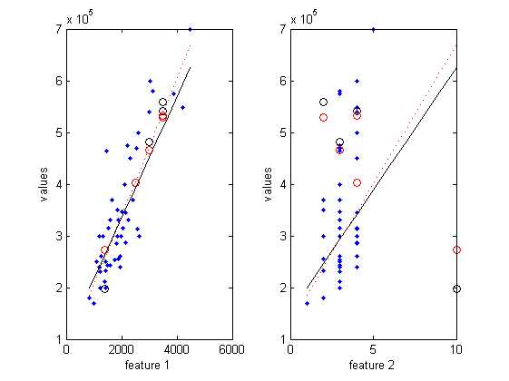

Regression implementation in MATLAB
Contents
Initialization
% Clear and Close Figures clear; close all; clc
Labels
% m - number of rows in training set % n - number of features % k - number of targets to compute % CapitalVarialbes - matrix % lowercaseVariables - vectors (by rows, columns = 1)
Input data
% Input file filename = 'ex1data2.txt'; data = load(filename); X = data(:,1:end-1); % training set, all but last column. :: (m, n) y = data(:,end); % values, last column. :: (m) [m, n] = size(X); fprintf('Number of training examples: %d\n', m); fprintf('Number of features: %d\n', n); % Normalize features [X_norm, mu, sigma] = featureNormalize(X);
Number of training examples: 47 Number of features: 2
Targets
% todo: read targets from file %Targets = [5; 18; 20; 22]; % matrix of target data. :: (k, n) Targets = [3000, 3; 3500, 4; 2500, 4; 3500, 2; 1400, 10];
Functions
Let give all functions handles. If later we would want to use another function to regression or to calculation of error we'll just update container with link to the function.
% Cost function :: (m, n) -> (m) -> (1) costFunc = @errorSquared; % Regression function :: (m, n) -> (n+1) -> (m) regressionFunc = @regressionLinear; % Normal equations function :: (m, n) -> (m) -> (n+1) normalEquationsFunc = @normalEquationsLinear; % Function performing gradient descent step stepFunc = @gradientStepLinear;
Normal equations
neTheta = normalEquationsFunc(X, y);
Gradient descent
learning rate
alpha = 0.09; % number of iterations num_iters = 50; % theta initial value theta = zeros(n+1, 1); % :: (n+1) [gdTheta, ~] = gradientDescent(X_norm, y, theta, alpha, num_iters, costFunc, regressionFunc, stepFunc);
Plot data
plotData(X, y, regressionFunc, neTheta, gdTheta, Targets);
Contour plot of data
return; num_of_points = 10; LinSpace = zeros(num_of_points, n); % :: (num_of_points, n) minX = min([X; Targets]); maxX = max([X; Targets]); for i=1:n LinSpace(:, i) = linspace(minX(i), maxX(i), num_of_points)'; end Z = applyRegression(regressionFunc, neTheta, LinSpace(:,1), LinSpace(:,2));